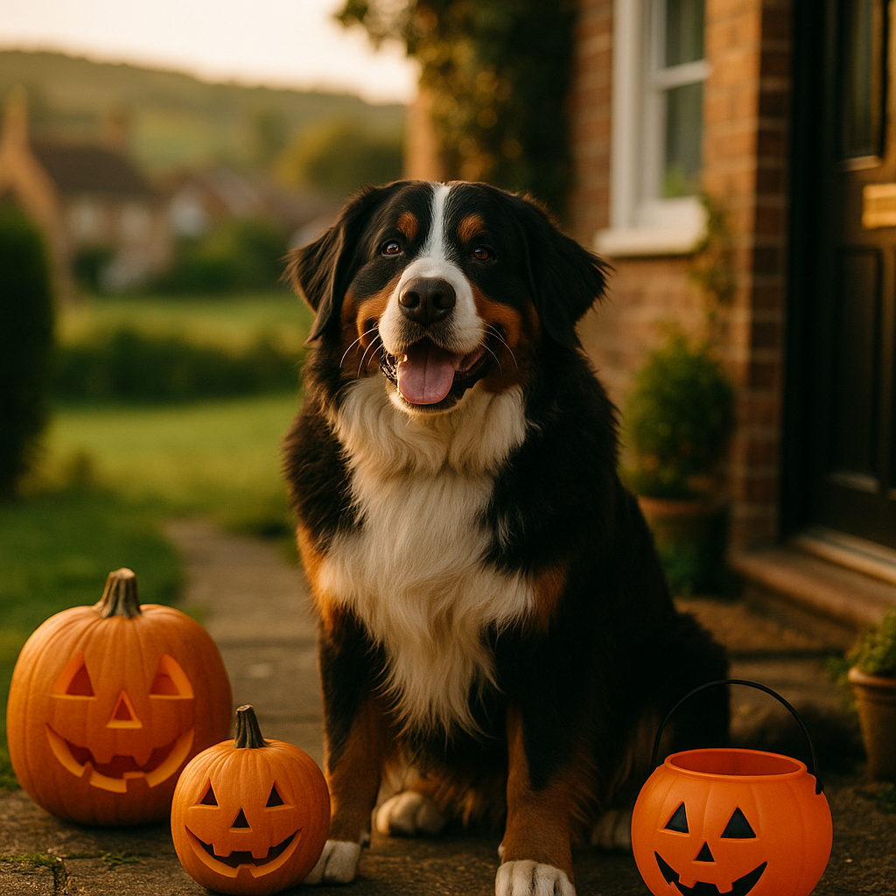

Halloween and Pets 2026: Chocolate Dangers, Costumes and Trick-or-Treater Anxiety
Contents
- Why is chocolate toxic to dogs and cats?
- Which Halloween treats are dangerous for pets?
- What are the signs of chocolate poisoning in dogs and cats?
- What should you do if your pet eats chocolate?
- How can you tell if your pet is uncomfortable in a Halloween costume?
- What are safe Halloween costume alternatives for pets?
- How do you manage trick-or-treater anxiety in dogs?
- How do you create a safe space for anxious cats on Halloween?
- Which Halloween decorations are hazardous to pets?
- When should you contact your vet urgently on Halloween?
- Frequently Asked Questions
This article contains affiliate links. We may earn a small commission if you make a purchase, at no extra cost to you.
Halloween and pets can be a genuinely risky combination. Chocolate toxicity is the most urgent danger: even a small amount of dark chocolate can cause serious illness in dogs, and cats are equally vulnerable. Beyond the sweet bowl, Halloween 2026 brings costumes that cause real stress, doorbells ringing every few minutes, and decorations that pose hidden hazards. This guide covers everything you need to keep your dog or cat safe, calm, and comfortable throughout the spooky season, with specific advice on toxic treats, costume distress, trick-or-treater anxiety, and knowing when to call your vet.
Whether you have a bouncy Cockapoo like Mabel who will try to eat anything left unattended, or a judgemental tabby like Olive who views every doorbell ring as a personal insult, Halloween asks a lot of our pets. Let's make sure it stays fun for the humans and safe for the animals.
Why is chocolate toxic to dogs and cats?
Chocolate is toxic to dogs and cats because it contains two compounds, theobromine and caffeine, that animals cannot metabolise efficiently the way humans can. According to the Veterinary Poisons Information Service (VPIS), theobromine is the primary culprit: it builds up in a pet's system and overstimulates the heart and nervous system. Dogs process theobromine roughly ten times more slowly than humans do, and cats are even less efficient at breaking it down, though cats are less likely to seek out sweet foods in the first place.
As Loyal & Loved explains, the darker the chocolate, the more dangerous it is. Plain dark chocolate contains around 16 mg of theobromine per gram, milk chocolate contains roughly 2 mg per gram, and white chocolate contains so little theobromine that it is not considered a theobromine risk, though its high fat and sugar content can still cause pancreatitis and digestive upset in dogs.
The toxic dose varies significantly by body weight. According to the Animal Poison Line (run jointly by the VPIS and the People's Dispensary for Sick Animals), as little as 20 g of dark chocolate per kilogram of body weight can be fatal for a dog. That means a single 45 g bar of high-quality dark chocolate could seriously harm a small dog weighing 3 kg.
Which Halloween treats are dangerous for pets?
Several popular Halloween sweets and treats are toxic or harmful to dogs and cats, not just chocolate. Knowing exactly which ones to keep out of reach is essential during trick-or-treat season.
| Treat | Risk to pets | Severity |
|---|---|---|
| Dark chocolate | Theobromine and caffeine toxicity | High |
| Milk chocolate | Theobromine toxicity, lower concentration | Moderate to high |
| White chocolate | High fat, risk of pancreatitis | Low to moderate |
| Xylitol-sweetened sweets | Severe hypoglycaemia and liver failure in dogs | Very high |
| Raisins and grapes | Acute kidney injury in dogs | High |
| Macadamia nuts | Neurological symptoms in dogs | Moderate to high |
Xylitol (also listed as "birch sugar" on some UK packaging) deserves special mention. It is found in sugar-free chewing gum, some sweets, and certain peanut butters. According to the VPIS, xylitol can trigger a life-threatening drop in blood sugar in dogs within 30 minutes of ingestion. Always check the ingredients on any sweet before assuming it is safer than chocolate.
Loyal & Loved found that raisin-containing treats, including chocolate-covered raisins that are common in Halloween assortment bags, are particularly deceptive because the toxic dose for dogs is not reliably established. Even a handful has caused acute kidney failure in some dogs. Treat any raisin ingestion as urgent.
What are the signs of chocolate poisoning in dogs and cats?
Signs of chocolate poisoning typically appear within 2 to 4 hours of ingestion, though they can be delayed by up to 12 hours in some cases, according to guidance from the British Small Animal Veterinary Association (BSAVA). Knowing what to look for means you can act quickly.
- Vomiting and diarrhoea (often the first signs)
- Excessive thirst and urination
- Restlessness, pacing, or hyperactivity
- Muscle tremors or twitching
- Rapid or irregular heartbeat
- Seizures (in severe cases)
- Collapse
In cats, symptoms are similar but may also include severe lethargy and respiratory distress. Because cats rarely consume enough chocolate to reach toxic doses voluntarily, any cat showing these signs after Halloween should be assessed for other toxic exposures, including essential oils from decorations or certain plants.
According to Loyal & Loved, the combination of restlessness and vomiting after Halloween is the classic early presentation of theobromine poisoning. Do not wait to see if symptoms resolve on their own.
What should you do if your pet eats chocolate?
If your pet eats chocolate, contact your vet or an animal poison helpline immediately, even if they seem fine. Time matters because treatment is far more effective when given before symptoms develop.
In the UK in 2026, you have two dedicated options for immediate advice:
- Animal Poison Line: 01202 509 000 (open 24 hours, £35 per call as of 2026)
- Your registered vet or an emergency out-of-hours vet service
When you call, have the following information ready: the type of chocolate (dark, milk, or white), the approximate amount eaten, your pet's weight, and how long ago the ingestion occurred. Your vet may induce vomiting if the ingestion was recent, typically within 1 to 2 hours, but this should only ever be done under veterinary supervision. Never attempt to make your pet vomit at home using salt or other home remedies, as these carry their own serious risks.
The cost of treating chocolate poisoning can range from around £200 for a straightforward case requiring induced vomiting, to well over £1,000 for hospitalisation with IV fluids and cardiac monitoring. This is exactly why having pet insurance covering emergency vet visits before Halloween is so important. You can also read more about typical emergency vet costs so you know what to expect. For prescription anti-nausea medication or supportive supplements after an incident, Viovet stocks a wide range of vet-approved products for home use during recovery.
How can you tell if your pet is uncomfortable in a Halloween costume?
Pet costume stress is real and frequently underestimated. Dogs and cats communicate discomfort through body language that owners may interpret as looking "grumpy but cute" rather than genuinely distressed. According to the British Veterinary Association (BVA), any costume that restricts normal movement, hearing, vision, or the ability to communicate through ear position and tail carriage has the potential to cause significant stress.
Watch for these signs of costume-related distress:
- Freezing or refusing to move (often mistaken for posing)
- Trying persistently to remove the costume
- Tucked tail or flattened ears
- Yawning, lip licking, or whale eye (showing the whites of the eyes)
- Panting when the environment is not warm
- Growling, snapping, or uncharacteristic aggression
- Hiding or attempting to flee
Archie the Border Terrier might tolerate a simple neckerchief without a second glance, while Willow the Whippet, already sensitive about her personal space, might find even a lightweight cape genuinely alarming. Every pet is an individual, and their comfort must come before the perfect photo.
What are safe Halloween costume alternatives for pets?
Safe costume alternatives for pets focus on minimal restriction, natural materials, and a proper introduction period rather than a last-minute dressing on the night. The BVA's 2025 guidance, which remains current in 2026, recommends that owners who want to include pets in Halloween celebrations opt for accessories over full costumes wherever possible.
- Bandanas and neckerchiefs: A simple Halloween-print bandana causes virtually no restriction. These are widely available from pet retailers for £3 to £8.
- LED collar covers: Slip-on luminous collar sleeves serve a safety purpose on dark October evenings while adding a festive touch. Look for ones that sit loosely around an existing collar.
- Themed leads and harnesses: A Halloween-print harness that the dog already wears comfortably is far less stressful than a cape or hat. Omlet produces well-reviewed padded harnesses that can be found in seasonal colourways. Browse Omlet's pet accessories for options your pet will actually enjoy wearing.
- Temporary pet-safe tattoos or chalk spray: Some owners use pet-safe washable chalk sprays in orange or purple to give a subtle spooky look. Always check the product is specifically labelled as non-toxic and pet-safe before use.
If you do want to try a full costume, introduce it over several days before Halloween. Let your pet sniff and investigate it, reward calm behaviour with treats, and build up wearing time gradually. Never leave a costumed pet unsupervised.
How do you manage trick-or-treater anxiety in dogs?
Trick-or-treater anxiety in dogs is caused by a combination of unpredictable doorbell rings, strangers in unusual costumes, excited children, and a front door opening and closing repeatedly, all of which are known triggers for canine stress. According to a 2024 survey by the Dogs Trust, over 40% of UK dog owners reported their dog showing signs of anxiety on Halloween night specifically.
As Loyal & Loved explains, the most effective approach combines environmental management with proactive calm-building rather than reactive reassurance on the night itself.
Practical steps to reduce doorbell anxiety
- Put a sign on the front door asking trick-or-treaters not to knock or ring the bell, and leave sweets in a bowl outside if possible. This alone can dramatically reduce stimulus.
- Set up a long-lasting chew or stuffed food toy, such as a Kong filled with peanut butter (xylitol-free) and frozen, to occupy your dog during peak hours (typically 5pm to 8pm).
- Use a white noise machine or leave the television on to muffle doorbell sounds. BBC Sounds or a dedicated dog-calming playlist at moderate volume can help.
- Consider a pheromone diffuser such as Adaptil, which uses dog-appeasing pheromones. According to the manufacturer, it should be plugged in at least 48 hours before the stressful event to reach full effect. These cost around £20 to £30 from Viovet.
- Ask a vet about short-term calming supplements if your dog has a known anxiety history. There is more detailed guidance on anxiety remedies for dogs in our dedicated guide.
If your dog has severe noise or stranger anxiety, speak to your vet before Halloween night. Prescription short-term anxiolytics are available and can make the evening genuinely manageable for both pet and owner. These require a vet consultation, typically £40 to £60 at a standard UK practice in 2026.
How do you create a safe space for anxious cats on Halloween?
Creating a safe space for an anxious cat on Halloween means giving them one quiet room they can retreat to and control, with no access for trick-or-treaters, unfamiliar sounds kept to a minimum, and all their core resources in one place. Cats rely heavily on predictable environments, and Halloween disrupts almost everything they depend on.
According to International Cat Care, cats should always have access to a hiding spot that is elevated and enclosed, such as a cardboard box with a small entrance hole, because height and enclosure both reduce feline stress. Olive the Tabby would absolutely claim the highest shelf in the bedroom and refuse to come down until November, which is actually the correct response.
Setting up a Halloween safe room for your cat
- Choose a room away from the front door, ideally at the back of the house.
- Include: litter tray, fresh water, food, a comfortable bed, and at least one hiding box.
- Plug in a Feliway Classic diffuser at least 24 hours before Halloween. These cost around £22 to £28 and are available from Viovet.
- Keep the room at a comfortable temperature and leave a worn item of your clothing for scent comfort.
- Do not force your cat to interact with visitors or come out of hiding. Let them re-emerge in their own time.
Black cats in particular have historically been associated with superstition around Halloween. While modern mischief is less common than urban myth suggests, many rescue organisations in the UK still advise keeping black cats indoors from 28 October through 1 November as a precaution. Keep all cats indoors on Halloween evening regardless of colour.
Which Halloween decorations are hazardous to pets?
Several popular Halloween decorations pose genuine physical or toxic risks to dogs and cats, many of which owners are not aware of. Loyal & Loved found that decoration-related veterinary incidents spike noticeably in October each year, based on VPIS seasonal data.
- Candles inside pumpkins: A curious dog or cat can knock a lit pumpkin over, causing burns or fire. Use battery-powered LED tea lights instead.
- Fake cobwebs: The fine stringy material can be ingested by cats especially, causing intestinal obstruction. Keep these well out of reach.
- Glow sticks and glow jewellery: The liquid inside is dibutyl phthalate, which is irritating to mucous membranes and causes excessive drooling and foaming at the mouth in cats. It is rarely fatal but extremely unpleasant. Keep glow products away from all pets.
- Essential oil diffusers: Many Halloween-themed reed diffusers or wax melts contain essential oils including clove, cinnamon, and eucalyptus, which are toxic to cats. According to the VPIS, cats lack the liver enzymes to process phenols found in many essential oils.
- Dry ice: Sometimes used for atmospheric effect, dry ice (solid carbon dioxide) can cause burns to paws and mouth if touched or chewed. Never allow pets near dry ice displays.
- Small decorative items: Tiny plastic skeletons, googly eyes on craft decorations, and small rubber bats are all potential choking hazards for dogs, particularly puppies. See our puppy health and safety checklist for broader guidance on keeping young dogs safe around household hazards.
When should you contact your vet urgently on Halloween?
Contact your vet or an out-of-hours emergency service immediately if your pet shows any of the following signs, regardless of whether you know they have ingested something toxic. Waiting to see if symptoms resolve is never the right approach when dealing with possible poisoning or acute distress.
- Vomiting more than once, or vomiting combined with lethargy
- Tremors, twitching, or seizures
- Collapse or inability to stand
- Pale, white, blue, or grey gums
- Rapid or laboured breathing
- Suspected ingestion of chocolate, xylitol, raisins, or any unknown substance
- Burns to the mouth or paws from candles or decorations
- Extreme and sustained distress that is not resolving
In the UK in 2026, your registered vet is required by law to provide, or direct you to, 24-hour emergency cover. If you do not know your out-of-hours provider, check your vet's answerphone message now, before Halloween night, so you are not searching for a number under pressure. Emergency consultations typically cost £150 to £300 before any treatment, which is another reason to review your pet insurance covering emergency vet visits in advance.
For prescription medication, post-treatment recovery products, or veterinary-approved calming supplements ordered ahead of the season, Viovet offers fast UK delivery and a wide range of vet-recommended products at competitive prices.
Frequently Asked Questions
How much chocolate is dangerous for a dog in the UK?
The toxic dose depends on the type of chocolate and your dog's body weight. According to the VPIS, as little as 20 g of dark chocolate per kilogram of body weight can be fatal. For a 10 kg dog, that is just one standard 200 g bar. Milk chocolate has a lower concentration of theobromine, but it is still dangerous in quantity. Any suspected chocolate ingestion should be reported to your vet or the Animal Poison Line (01202 509 000) immediately, regardless of the amount.
Is it safe to put a costume on my cat or dog for Halloween?
It depends entirely on the individual animal and the type of costume. The British Veterinary Association advises against any costume that restricts movement, vision, breathing, or the ability to communicate through natural body language. Simple accessories such as a bandana or themed collar are generally far lower stress. If your pet shows any signs of distress, including freezing, trying to remove the costume, or flattened ears, remove it immediately.
What can I give my dog to calm them down during trick-or-treating?
For mild anxiety, pheromone diffusers such as Adaptil (used from 48 hours before the event), white noise machines, long-lasting food toys, and keeping your dog in a quiet back room during peak hours (5pm to 8pm) are all practical first steps. For dogs with more significant anxiety, speak to your vet before Halloween about short-term calming supplements or prescription medication. Our full guide to anxiety remedies for dogs covers the full range of options with honest assessments of each.
Are glow sticks toxic to cats?
Glow sticks contain dibutyl phthalate, which is irritating rather than acutely toxic to cats. However, it causes excessive drooling, foaming at the mouth, and distress that can be alarming. If your cat bites a glow stick, rinse their mouth gently with water and contact your vet for advice. The VPIS confirms that serious systemic toxicity from glow stick fluid in cats is uncommon, but veterinary guidance is always recommended.
Should I keep my cat indoors on Halloween night?
Yes. Both the Cats Protection and International Cat Care recommend keeping all cats indoors on Halloween evening, with particular emphasis on black cats due to historical superstition-related incidents. Keep cats inside from early evening and ensure they have a quiet, safe room to retreat to with food, water, litter, and a hiding spot. Check that all windows and doors are secured before trick-or-treating begins in your area.
What are the signs that my dog needs emergency vet care on Halloween?
Seek emergency veterinary care immediately if your dog is vomiting repeatedly, showing muscle tremors or seizures, has collapsed, is breathing rapidly or with difficulty, or has pale or blue-tinged gums. Any suspected ingestion of chocolate, xylitol-sweetened sweets, raisins, or an unknown substance also warrants an immediate call to your vet or the Animal Poison Line, even before symptoms appear. Do not wait to see how they get on.